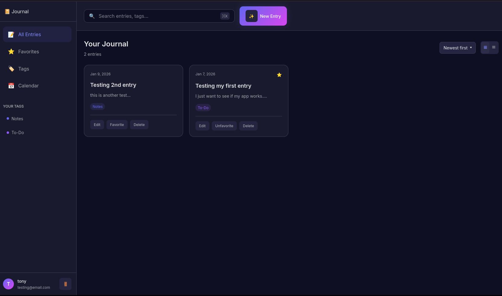
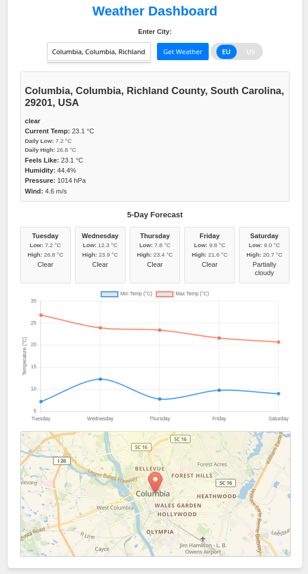

Projects
Journal

Description: Journal is a full-stack personal journaling web application with secure user authentication, email verification, and cloud-based data storage. Users can create, organize, and search journal entries with a tagging system and favorites feature.
View Details
Tech Stack
- Frontend: HTML, CSS, JavaScript
- Backend: Node.js (AWS Lambda)
- Database: MongoDB Atlas
- Email: Brevo (Transactional API)
- Deployment: AWS Lambda + API Gateway
- Hosting: GitHub Pages
Key Features
- Secure authentication with JWT tokens
- Email verification for new accounts
- Create, edit, and delete journal entries
- Tag system for organizing entries
- Mark entries as favorites
- Search entries by title and content
- Calendar view of entries
WeatherApp

Description: WeatherApp provides current weather information and a 5-day forecast for any city, available as both desktop and web versions. It uses the VisualCrossing and LocationIQ APIs to display real-time weather data and maps.
View Details
Tech Stack
- Frontend: HTML, CSS, JavaScript
- Backend: Flask (Python 3.11)
- Deployment: AWS Lambda (via Zappa)
- Hosting: GitHub Pages
- APIs: VisualCrossing, LocationIQ
Key Features
- Current weather: temperature, humidity, description
- 5-day forecast with daily min/max temperatures
- Map display centered on selected city
- Autocomplete city search (web version)
- Fully serverless backend hosted on AWS Lambda
Canvas Draw

Description: Canvas Draw is a web-based drawing application built with HTML5 Canvas and JavaScript. It allows users to create digital artwork using brushes, shapes, text, and a flood fill tool — complete with undo/redo, dark mode, and timelapse replay features.
View Details
Tech Stack
- Frontend: HTML5, CSS, JavaScript
- Canvas API: Used for drawing, shapes, and layering
- Hosting: GitHub Pages
Key Features
- 🖌 Tools: Brush, eraser, shapes (rectangle, circle, line), text, flood fill
- Background image support with eraser transparency
- Undo/Redo up to 50 actions
- Clear canvas (preserves background)
- Download artwork as PNG
- Dark mode toggle
- Timelapse replay of drawing process